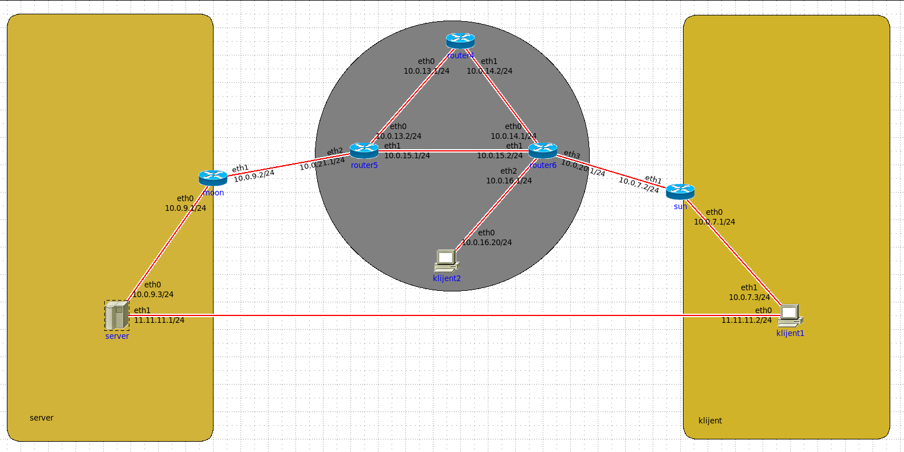
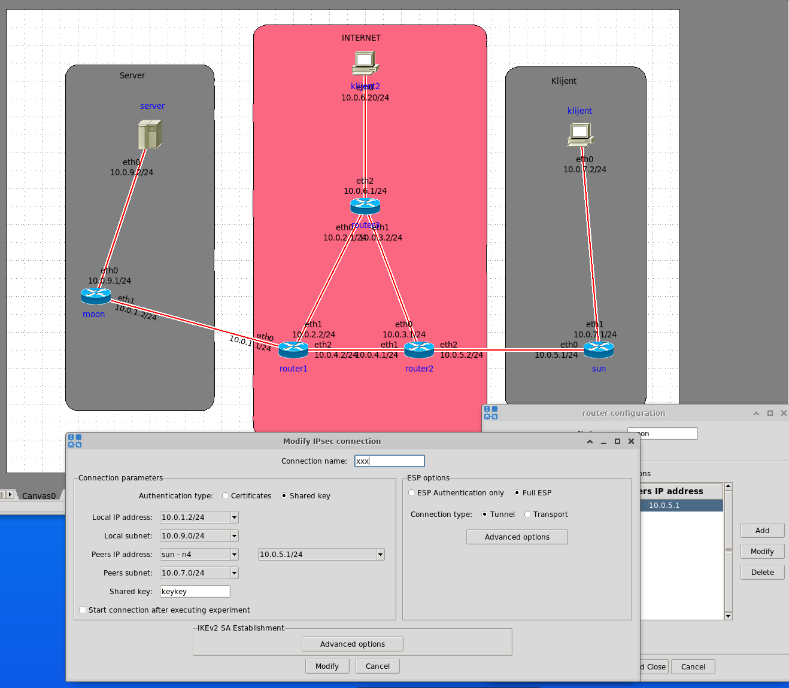
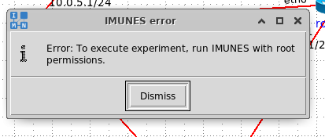

anon00 aha ok, hvala😃
"Uvjerite se da je mreža ispravno konfigurirana tako da pokrenete naredbu ping s čvora klijent te da ona vraća odgovor od čvora server" i onda njima ispadne ttl 60
tomekbeli420 Možda je u primjeru mrežna topologija drukčija pa je njima i TTL drukčiji. 🤔
kad napravim “ping 11.11.11.1” doslovno nista se ne desava, nit dobivam ping response, niti u wiresharku vidim pingove, ima netko takav problem?
rozy imam isti problem. jesi li uspio nekako to riješiti?
rozy Jel itko uspio riješiti ovo, imam isti problem?
Cubi rozy BillIK Meni su krivo postavljene IP adrese bile za server i klijent
BillIK nisam, mislim da cu na kraju samo bezveze nesto napisat pa sta bude bude
koliko vam je trebalo da rijesite vjezbu?
Daeyarn 2 - 3 sata ak fulaš tu i tam
Skenk bude ti “destination unreachable (port unreachable)”? Jesi uspio rijesiti?
Skenk
branimir1999 jeste uspjeli?
 jel bi ovo ovak trebalo izgledat?
ping sa klijent1 na 10.0.9.2 ne radi, Network is unreachable
help
angello2 ne, makni direktnu poveznicu ovu skroz dole također ove ip adrese 10.0.9.2 i 10.0.7.2 su adrese servera i klijenta tim redosljedom i pazite da na svake dvije poveznice svuda bude ista podmreža
Me Yep. Topologija mi je bila netočna i čim mi je postala ispravna, sve je teklo glatko. Meni je bio problem što su mi usmjeritelj od server i klijent imali 10.0.9.2 i 10.0.7.2 umjesto samih računala. Pogledaj: tomekbeli420
Me
Nisam uspio drugi osposobit da radi, ovako mi izgleda topologija + ipsec postavke na cvoru moon

vidi li netko u cemu je problem? probao sam i druge kombinacije local - peer subnetova
Skenk ovako ne znam do kojeg od ovih koraka je al ovo sam napravio -ugasio/upalio virtualku -obrisao ipsec iz moon i sun -napravio nove ipsec(sve identicno postavljeno kao i prije) i obavezno nakon kaj se klikne add u onom drugom prozoru stisnut apply nakon ovog je proradilo
Skenk meni je bila dobra topologija ali je problem bio što sam zbog nečeg drugog više puta obrisao i ponovno postavio sve čvorove pa se pregazila konfiguracija postavljena onim naredbama u 1. zadatku. Nakon što sam ponovno pokrenuo te naredbe i onda postavio ipsec je proradilo.
 jel ima iko ovakav problem?
filip pokreni imunes iz terminala sa “sudo imunes”
otvori konzolu i upiši: “sudo imunes <ime_datoteke>.imn”
koliko je .imn datoteka potrebno predati?
FERonja samo jednu, ovu jmbag.imn